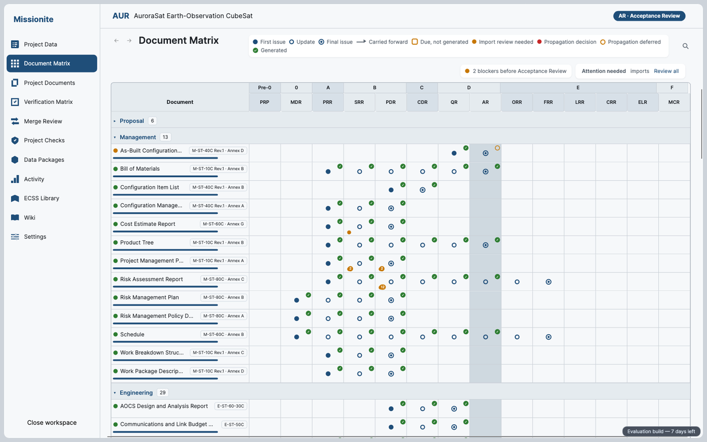
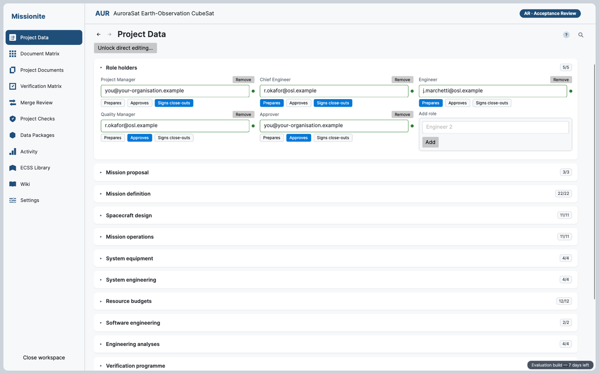
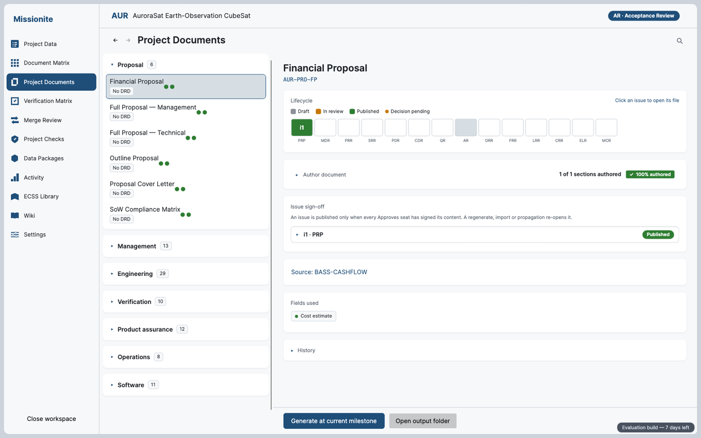
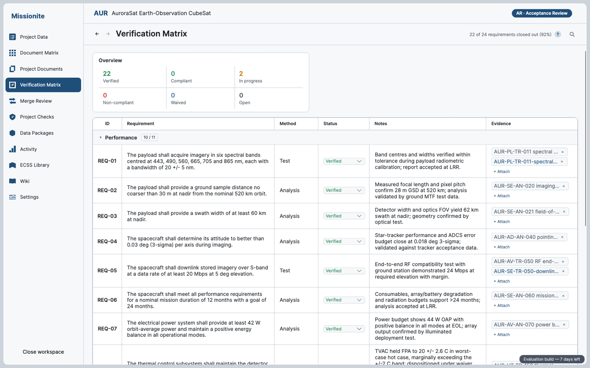
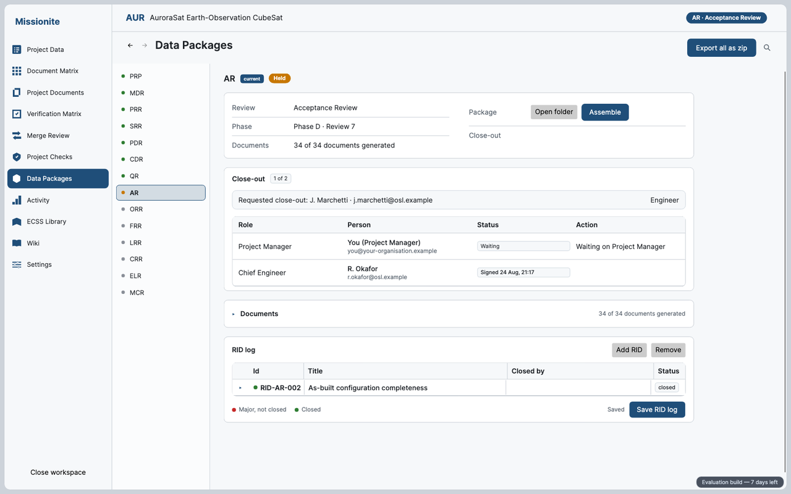

ECSS project documentation
Missionite carries a space project’s ECSS document set from one review to the next. Documents stay current, evidence stays attached, packages ship signed.
Document Matrix
The whole ECSS set on one grid — what exists, what is due and what carried forward, from PRP to MCR.

Project Data
Values entered once flow into every document. Role holders and their duties live beside the data they sign.

Project Documents
Generated from project data and regenerated after any change, so the set never drifts out of step.

Verification Matrix
Method, status, notes and attached evidence for every requirement, closed out group by group.

Data Packages
Assemble the delivery package, gather close-out signatures from the roles your project configures, export one zip.

Also in the app
Access is by invitation. Sign in with your invited account to download.